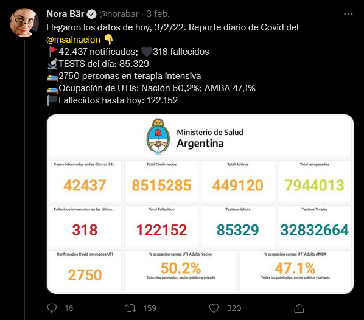

Forma sencilla de scrapear la timeline de una cuenta de twitter, y extraer datos útiles mediante expresiones regulares (regex).
Advertencia: No entro en detalle sobre como utilizar auth o tokens a través de la API de twitter o cómo crear una APP en developer.twitter.com
Advertencia 2: En este post vamos a tratar con tweets, es decir texto. Si, vamos a tratar con regex. Si, voy a explicarles que significa cada cosito. No, no es tan difícil. Les juro que hasta puede ser divertido… Bueno, depende..
Twitter sirve para muchas cosas. Enojarse y hacer enojar a otrxs es la principal, pero el potencial es amplio.
En este caso preciso datos sobre Covid, me aproximé a la tarea a través de la tl de Nora en primer lugar por la consistencia en el formato y la constancia con que publica estos datos, además de que recopila datos oficiales.
 Para muestra sobra un botón
Para comenzar a bajar los tweets precisamos instalar el paquete {rtweet}, también usaremos {dplyr} para manipular dataframes y {stringr} para trabajar con texto
#install.packages("rtweet")
library(rtweet)
library(dplyr)
library(readr)
library(stringr)Por suerte rtweet resultó un poco más simple que lo que recordaba, sin necesidad de autenticarnos y solamente con el handle (el arroba) podemos extraer los 3200 tweets mas recientes de una timeline. Lamentablemente, no más que eso.
## tl_nora2 <- get_timeline("norabar", n = 3200)
head(tl_nora)## # A tibble: 6 x 90
## user_id status_id created_at screen_name text source
## <dbl> <dbl> <dttm> <chr> <chr> <chr>
## 1 130979339 1.49e18 2022-02-05 21:20:36 norabar "Ay \U0001f630 #h~ Twitte~
## 2 130979339 1.49e18 2022-02-05 20:31:56 norabar "Muertes por mill~ Twitte~
## 3 130979339 1.49e18 2022-02-05 20:10:10 norabar "Casos cada 100.0~ Twitte~
## 4 130979339 1.49e18 2022-02-05 20:08:51 norabar "\U0001f6a9Por pr~ Twitte~
## 5 130979339 1.49e18 2022-02-05 20:08:36 norabar "\U0001f3f4Detall~ Twitte~
## 6 130979339 1.49e18 2022-02-05 20:08:16 norabar "Llegaron los dat~ Twitte~
## # ... with 84 more variables: display_text_width <dbl>,
## # reply_to_status_id <dbl>, reply_to_user_id <dbl>,
## # reply_to_screen_name <chr>, is_quote <lgl>, is_retweet <lgl>,
## # favorite_count <dbl>, retweet_count <dbl>, quote_count <lgl>,
## # reply_count <lgl>, hashtags <lgl>, symbols <lgl>, urls_url <lgl>,
## # urls_t.co <lgl>, urls_expanded_url <lgl>, media_url <lgl>,
## # media_t.co <lgl>, media_expanded_url <lgl>, media_type <lgl>, ...Vamos entonces a procesar esta data:
Ahora a lo interesante: 4. Voy a generar una nueva columna por cada dato que extraiga. y como venimos en racha, voy a empezar explicando cada una de las regex, y luego el resto de la función, que es la misma para cada caso. 4.a: \d’*‘.\d’*’ – Acá tenemos nuevamente digitos, seguidos de un caracter cualquiera (simbolizado por el punto), seguido de más dígitos. Luego, volvemos a tener el (?=cadena de texto) que en este caso es un espacio y la palabra notificados.
tls <- tl_nora %>%
select(created_at, text) %>% # 1
filter(str_detect(text, "\\d*(?= personas en terapia)")) %>% # 2
mutate(text = str_to_lower(text)) %>% # 3
mutate(casos = parse_number(str_extract(text, "\\d*.\\d*(?= notificados)"),
locale = locale(decimal_mark = ",")),
uti_covid = parse_number(str_extract(text, "\\d*(?= personas en terapia)"),
locale = locale(decimal_mark = ",")),
tests_dia = parse_number(str_extract(text, "(?<=tests del d[í|i]a: )\\d*\\.\\d*"),
locale = locale(decimal_mark = ",")),
uti_nacion = parse_number(str_extract(text, "(?<=naci[ó|o]n )\\d*.\\d."),
locale = locale(decimal_mark = ",")),
uti_amba = parse_number(str_extract(text, "(?<=amba )\\d*.\\d."),
locale = locale(decimal_mark = ","))
) %>%
mutate(uti_amba = ifelse(uti_amba == 367, 36.7, uti_amba)) %>% #arreglo un pequeño error de parseo
print()## # A tibble: 117 x 7
## created_at text casos uti_covid tests_dia uti_nacion uti_amba
## <dttm> <chr> <dbl> <dbl> <dbl> <dbl> <dbl>
## 1 2022-02-05 20:08:16 "llegaron ~ 21836 2630 60159 48.8 45.8
## 2 2022-02-04 20:08:03 "llegaron ~ 40094 2692 92895 49.2 46.5
## 3 2022-02-03 20:16:27 "llegaron ~ 42437 2750 85329 50.2 47.1
## 4 2022-02-02 20:14:23 "llegaron ~ 45070 2762 83319 50.5 46.7
## 5 2022-02-01 20:34:17 "llegaron ~ 49122 2864 94237 51.1 48.1
## 6 2022-01-31 20:12:17 "llegaron ~ 43472 2909 83165 52.1 48.4
## 7 2022-01-30 20:31:47 "llegaron ~ 21570 2912 46067 NA NA
## 8 2022-01-29 20:09:36 "llegaron ~ 41978 2924 77448 49.8 48.1
## 9 2022-01-28 20:08:45 "llegaron ~ NA 2945 111387 49.9 48.3
## 10 2022-01-27 20:14:16 "llegaron ~ 77729 2836 131582 49.7 48.1
## # ... with 107 more rows